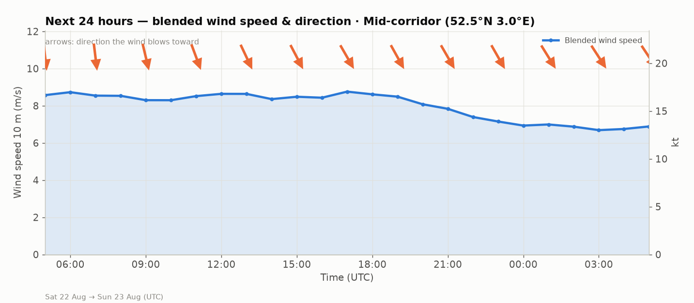

Next 24 hours — blended wind speed
Weighted blend of all six models; the arrows show where the wind blows toward.

What each model says right now
Learned weights shown per quantity — ARPEGE earned zero weight for speed, so it only informs direction.